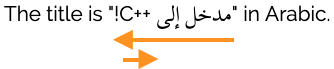
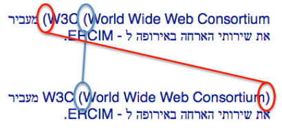
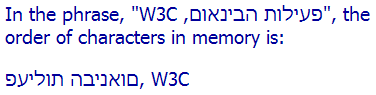

Arabic, Hebrew, and other languages that use right-to-left scripts commonly include numerals or include text written in the Latin or other scripts: both of these typically flow left-to-right within the overall right-to-left context.
This article tells you how to write HTML where text with different writing directions is mixed within a paragraph or other HTML block (ie. inline or phrasal content).
The advice here is only for use with inline elements, such as span, cite, em, etc. See the article mentioned above when working with block elements.
If you know the direction of all the text involved, tightly wrapeveryopposite-direction phrase in markup, and use the dir attribute on that markup. Be sure to nest markup to show the structure.
<p>the title is <cite dir="rtl">AN INTRODUCTION TO <span dir="ltr">c++</span></cite> in arabic.</p>
If you want to bullet-proof your code for legacy or non-conformant browsers where tightly-wrapped text is followed inline by a number or a logically-separate opposite-direction phrase, add ‏ or ‎ (choose the one corresponding to the base direction of the surrounding text) immediately after the phrase.
<p>we find the phrase '<span dir="rtl">INTERNATIONALIZATION ACTIVITY</span>‎' 5 times on the page.</p>
If you don't know the direction of text that will be inserted at run time, add dir=auto to any markup that tightly wraps the location. If there is no markup, wrap the location with a bdi element.
In the sections below, we will examine specific examples of what can go wrong, why it goes wrong, and what fixes it. Nevertheless, it is important to realize that, basically, the problems all occur when content in one direction includes an inline phrase in the opposite direction. We will call these opposite-direction phrases. An opposite-direction phrase may be a single directional run (such as a word), or may be a set of embedded directional runs with embedded changes in base direction.
In the following example, the English sentence contains an opposite-direction phrase between the quotation marks. That phrase, itself, contains a nested opposite-direction phrase (the word C++), and an exclamation mark that has to appear at the end of the Arabic phrase (ie. alongside the left-hand quote mark). The arrows show the opposite-direction phrases.

Common examples of such phrases include URLs, quotations, titles of books, articles or plays, formatted numbers (e.g. phone numbers and MAC addresses), street and email addresses, and various names, such as brand names, acronyms, part numbers, site names, place names, file names (and paths), etc.
The problem is worse in applications that drop text into a page, say from a database. The application often does not know a-priori whether such text is (or perhaps contains) an opposite-direction phrase, and has to estimate its direction at run-time by checking the Unicode ranges of its characters.
Whenever an opposite-direction phrase occurs, things can go wrong. That is, something will go wrong if the text includes, without any special wrapping, an inline opposite-direction phrase that:
begins or ends with neutral characters,
begins with a number,
is followed by a number,
is followed by another, but logically separate, opposite-direction phrase,
contains one or more nested phrases whose base direction is opposite to that of the phrase.
Although this list seems daunting, there is no need to determine which, if any, of these cases applies to a particular phrase. There is a simple, default way of wrapping opposite-direction phrases that will prevent problems in all of the cases above, and do no harm when none of them apply. The steps that follow describe how do such wrapping.
Here we summarize default guidelines for working with bidirectional inline text. Often alternative approaches will work, but the approaches outlined here are simple to apply and should work for all cases.
Sometimes, the bidirectional text will work fine without intervention – for example, when the opposite-direction phrase is a single word that is not part of a list or followed by a number. However if you want to keep life simple and avoid having to think too carefully about whether or not you need to add markup, then just follow these guidelines for all direction changes. Using the approaches outlined will not cause problems where they are not needed, but may sometimes become useful later as text is edited.
The best way to address bidi issues in your content is to tightly wrap everyopposite-direction phrase in markup that sets its base direction. By tightly wrap, we mean that the element contains the entire opposite-direction phrase, and nothing but the opposite-direction phrase.
If the phrase is already tightly wrapped in an inline element (ie. it is already wrapped in markup), you can use the existing element. Otherwise, tightly wrap the opposite-direction phrase with a span element.
Then add a dir attribute. Most of the problems pointed out earlier simply melt away when you do this. Not only does the attribute apply the correct base direction to the phrase, but when browsers encounter the dir attribute on an element they (directionally) isolate the text inside the element from the text surrounding it.
Adding a dir attribute
Add a span if there is no markup tightly wrapping the opposite-direction phrase.
In fact, using the parentheses (rather than other punctuation) solves the problem here in Gecko and Blink browsers, but not at the time of writing in Webkit browsers. However, the problem does occur in Gecko and Blink if other punctuation is used, such as commas or en-spaces, etc. Using the markup shown bulletproofs your code against browser variations and future edits.
Often, these spillover effects can be addressed by judiciously placing ‎ or ‏ markup or in the appropriate place. This is discussed in more detail in the worked examples page. However, the wrapping approach shown here also works, and avoids the effort and attention required in being judicious.
Nota bene: RLM and LRM only address the isolation problem – they don't fix the previous examples that we looked at. Note also that much of the time you will want to wrap these phrases in markup anyway so that you can apply the lang attribute (which applies relevant fonts and other typographic behaviours, affects reading by voice browsers, spell checking, etc.).
When text will be added at run time to your HTML page you may not be able to predict the base direction of the injected text in advance. To handle this eventuality you have two options.
If the phrase is tightly wrapped by an element already, you could just add dir="auto" to that element. This directionally isolates the element's text and looks at the first strong character to determine what base direction to apply.
Otherwise, wrap the phrase in a bdi element (or in a span element with dir set to auto, if you prefer.) Without a dir attribute, the bdi element behaves as if dir="auto" had been applied.
There are some situations where you may not be able to use the markup described in the previous section. In HTML these include the title element and any attribute value.
In these situations you have to use the invisible Unicode characters that produce the same results.
To replicate the effect of the markup described in the example above related to nested base directions, we can use pairs of characters to surround the embedded text. The first character is one of U+2067 RIGHT-TO-LEFT ISOLATE (RLI) or U+2066 LEFT-TO-RIGHT ISOLATE (LRI). These are placed in the same location as the opening <span dir="..."> tag. The second character is U+2069 POP DIRECTIONAL ISOLATE (PDI), and it corresponds to the </span> in the markup. Here's an example.
<title>the title says "⁦INTERNATIONALIZATION ACTIVITY, w3c⁩" in hebrew.</title>
To simulate the use of the auto value of dir, or bdi, you can use U+2068 FIRST STRONG ISOLATE at the beginning of the phrase.
These control characters should only be used for inline phrases, not for block elements such as paragraphs. In general, it is recommended that you use markup where it is available, rather than these character pairs, because it is easier to see and therefore manage the markup, and it is consistent with the approach used for block elements. Where markup is not available, of course, this is the only option.
There is another set of characters which change the base direction: U+202B RIGHT-TO-LEFT EMBEDDING (RLE), U+202A LEFT-TO-RIGHT EMBEDDING (LRE), and U+202C POP DIRECTIONAL FORMATTING (PDF), but they don't directionally isolate the phrases they surround, so it's best not to use them.
The two characters we already met in the above text, U+200F RIGHT-TO-LEFT MARK (RLM) and U+200E LEFT-TO-RIGHT MARK (LRM) can also be used, where appropriate. In addition to the numeric references, these characters also have named entity references, ‏ and ‎.
<title>the title says "INTERNATIONALIZE THE WEB!‏" in arabic.</title>
Note that in the example just shown the Arabic text is no longer marked up for language or styling – which is one reason to use markup rather than these code points where you can.
The Unicode Bidirectional Algorithm has rules for displaying mirrored characters. The visible shape of these characters depends on whether they are displayed in a LTR or RTL context. These are commonly pairs of characters such as parentheses, brackets, and the like, but also include some characters that are not typically paired, such as ≠ [U+2260 NOT EQUAL TO].
The character > [U+003E GREATER-THAN SIGN] points to the right when displayed in a LTR context, but to the left in an RTL context.
Test in your browser
This is completely automatic. You do not have to change the character for the shape to change.
The ends of an opening parenthesis always face in the direction of the text flow, and closing parentheses face the other way. This means that, whether the stored content is in Arabic/Hebrew or Latin script, you would use the same ( [U+0028 LEFT PARENTHESIS] character at the beginning of the parenthesized text. In other words, treat mirrored characters as if any word left in the name meant 'opening', and right meant 'closing'.
But up-to-date implementations of the bidi algorithm go further, and attempt to balance parentheses. In the picture below, the higher lines show how parenthesis used to look (without intervention), and the bottom shows how they look with the balancing in play.

Parentheses, as they used to be (top) and balanced (bottom) using the Unicode Bidirectional Algorithm.
Test in your browser
Again, you don't need to take any action to enable these improvements. The browser should just do this.
There may be occasions where you don't want the bidi algorithm to do its reordering work at all. In these cases you need some additional
markup to surround the text you want left unordered. In HTML this is achieved using the inline bdo element. Note that you shouldn't find yourself using bdo for normal management of bidi text – it's only for special cases, mostly educational. And don't confuse it with bdi.
Examples that show the characters as ordered in memory use the bdo tag to achieve that effect. You must provide a dir attribute with the bdo element, and the value must be either rtl or ltr (it cannot be auto). For example, the picture below shows Hebrew text as ordered in memory.

Text using a bidirectional override (bottom line).
For the bottom line we would use the following markup in HTML:
In other XML applications, such as XHTML2, it may be implemented as a value of rlo or lro on the dir attribute, enabling it to be applied to any element. There are also Unicode control
characters you could use to achieve the same result, but because they create states with invisible boundaries this is generally not recommended.